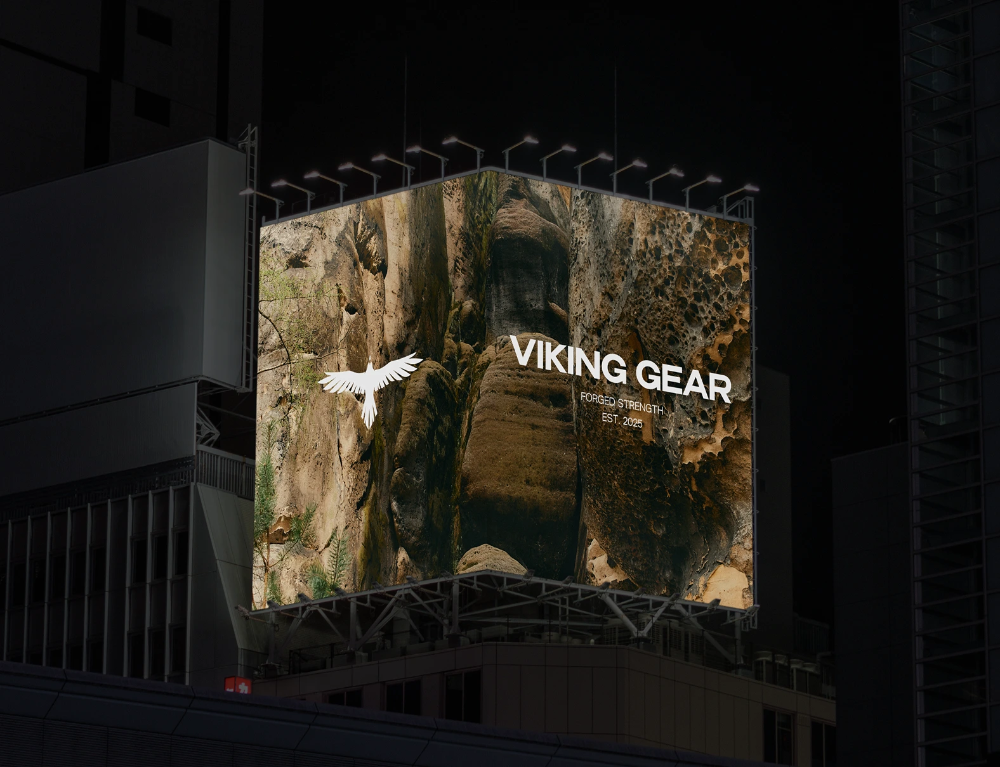

Research / Experiment Form / Culture / Light 26.2056° S, 28.0337° E
Viking Gear
End-to-end brand development, web design & development, e-commerce, 3D modeling, and animation.
[ View Project ]Rebel Kids Club
Spatial identity systems, architectural photography direction, and immersive digital experience design.
[ View Project ]Mannequin Films
Performance brand strategy, motion design, campaign art direction, and global e-commerce rollout.
[ View Project ]Viking Gear
End-to-end brand development, web design & development, e-commerce, 3D modeling, and animation.
[ View Project ]Rebel Kids Club
Spatial identity systems, architectural photography direction, and immersive digital experience design.
[ View Project ]
